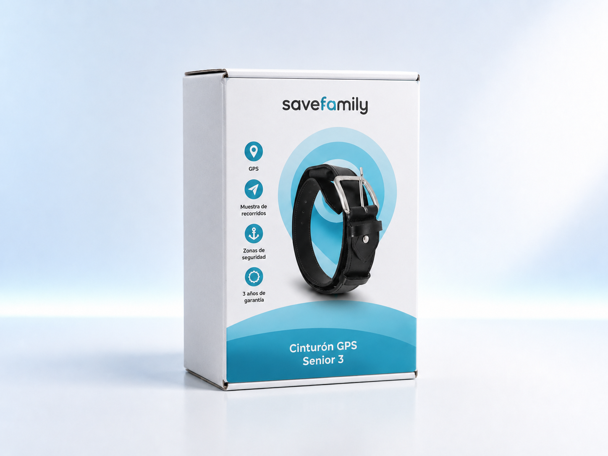
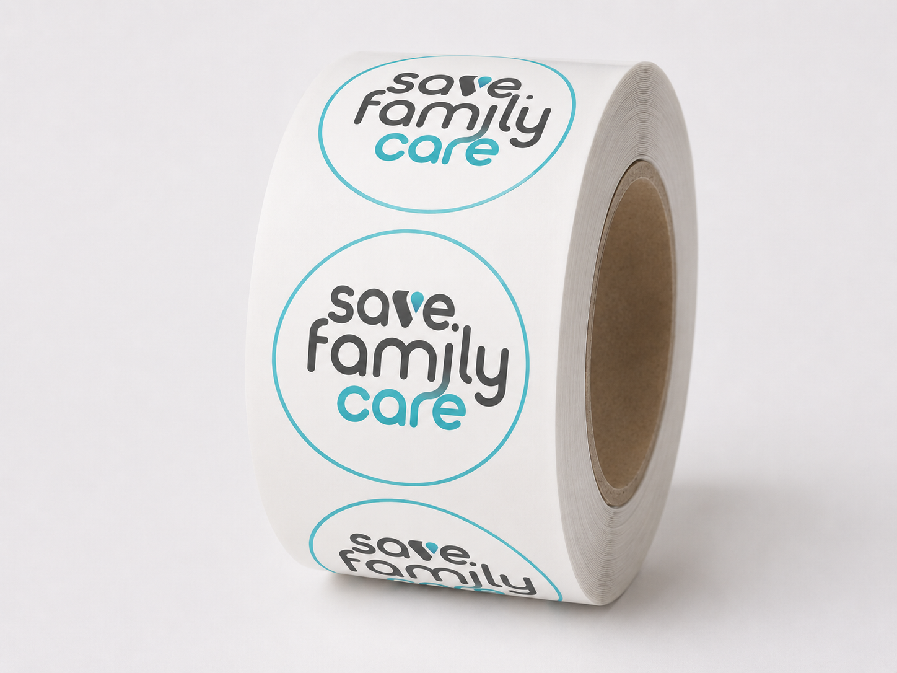

Packaging gama Senior SaveFamily
Para este proyecto desarrollé la identidad gráfica completa de dos dispositivos GPS dirigidos a personas mayores: un cinturón geolocalizador y un colgante inteligente con localización en tiempo real, detección de caídas y botón SOS de emergencia. El trabajo incluyó el diseño de dos packagings diferenciados, la creación de un logotipo específico para la gama de productos y una colección de pegatinas identificativas destinadas tanto al embalaje como a la comunicación visual del producto. La propuesta gráfica se construyó tomando como referencia la paleta cromática de la línea senior de la marca y el icono de geolocalización presente en los dispositivos, creando una identidad coherente, reconocible y fácilmente asociable a conceptos como seguridad, asistencia y tranquilidad. El objetivo principal fue transmitir confianza y accesibilidad mediante un lenguaje visual claro, moderno y cercano, adaptado a las necesidades del público senior y de sus familiares. El resultado es un sistema gráfico unificado que refuerza la funcionalidad de los productos y mejora su percepción en el punto de venta, facilitando la identificación de sus principales características y beneficios de forma rápida e intuitiva.


